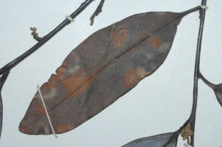
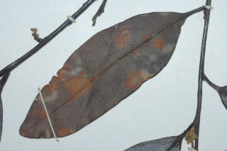

Images :
 


| Habit : | Moderate sized trees , up to 15 m tall. |
| Leaves : | Leaves simple , alternate , distichous ; petiole 0.5-0.7 cm long, glabrous ; lamina 5.5-9 x 2-3.8 cm, lanceolate to narrow elliptic-oblong , apex acute with blunt tip, base acute , coriaceous , shining; secondary_nerves 8-11 pairs; tertiary_nerves reticulate , prominent on both surfaces. |
| Inflorescence / Flower : | Flowers unisexual , cream colored; male inflorescence in few-flowered axillary cymes ; female flowers solitary . |
| Fruit and Seed : | Berry , globose , 2.5 cm in diameter; seeds 4 oblong , ruminate . |